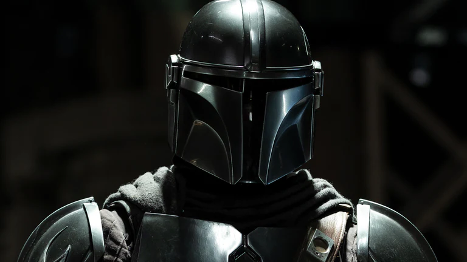
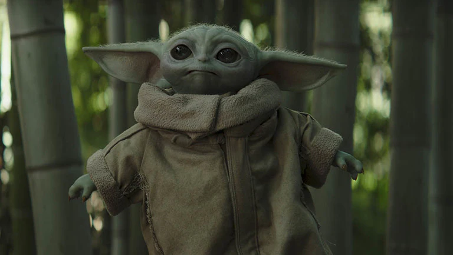
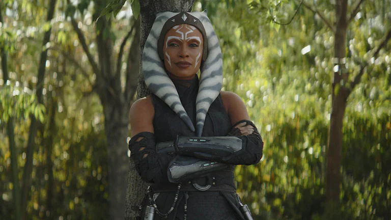

Din Djarin The Mandalorian, known to a few as Din Djarin, is a battle-worn bounty hunter, making his way through a dangerous galaxy in an uncertain age. |
 |
|  |
Grogu A mysterious child pursued by bounty hunters on behalf of Imperial interests, the foundling Grogu found protection with the Mandalorian Din Djarin. Through their adventures and journeys through the galaxy, young Grogu is honing remarkable abilities
|
Asoka Tano Ahsoka Tano, a Togruta female, was the Padawan learner to Anakin Skywalker and a hero of the Clone Wars. Alongside Anakin, she grew from headstrong student into a mature leader. But her destiny laid along different path than the Jedi
|
 |